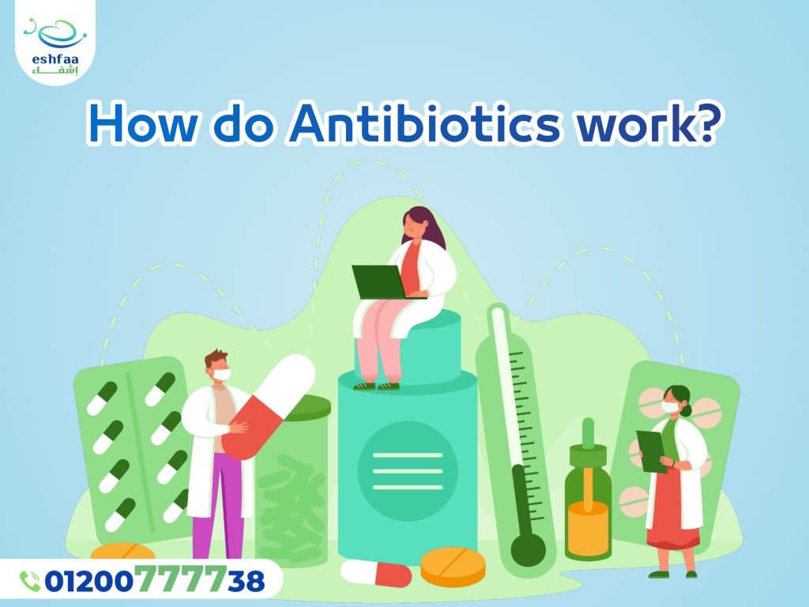

Antibiotic Resistance
Before we begin to our main topic about antibiotic resistance, we will talk about ,what antibiotics are?, how they work?, and their types.
What are antibiotics?
They are therapeutic materials obtained in several ways, whether they are completely
manufactured or extracted from natural plants or even using microbs to produce them.
Antibiotics come in many forms:
- Tablets
- Capsules
- Syrups
- Creams
- Topical ointments
- Intravenous injections
Antibiotics are used to treat diseases caused by bacteria, as they prevent the growth of
microbes or slow the rate of their reproduction.
Antibiotics are considered ineffective in the case of diseases that result from viral
infections such as influenza and the common cold.
The choice of the type of antibiotic depends on the type of bacteria causing the disease, the
health status of the patient, and whether bacteria are resistant to antibiotics or not.
What are the types of antibiotics?
1. Broad spectrum antibiotics
For the treatment of a wide variety of bacterial infections.
2. Narrow spectrum antibiotics
It is only effective against a specific group of bacteria.
How do antibiotics work?

There are two types of antibiotics depending on how they work:
1. Bactericidal antibiotics
It kills and destroys bacteria by preventing the formation of bacterial cell components.
2. Bacteriostatic antibiotics
It inhibits the growth of bacteria and thus limits their ability to multiply and spread.
The mechanism of antibiotic effect against bacteria include the following:
- Attacking and destroying the cell membrane.
- Preventing the reproduction and growth of bacteria.
- Preventing the formation of proteins inside the bacterial cell.
How long do antibiotics take to work?
Antibiotics begin to work against the bacteria as soon as they are taken, but their effect do
not appear until after 2 to 3 days.
How quickly you get better after using antibiotics depends on the type of infection being
treated.
Usually, the appropriate period for using the antibiotic is from 7 to 14 days, and it can be
less than that, and the doctor determines the type of antibiotic appropriate for the infection
and the appropriate period.
Even if you start to feel better after a few days of using the antibiotic, you must complete
the full dose as directed by your doctor to make sure that the infection is completely
eliminated and this also helps in reducing the resistance of bacteria to the antibiotics.
Therefore, the use of antibiotics should always be under the supervision of a physician.
What is antibiotic resistance?
With the misusing of antibiotics and , of some types of bacteria change and mutate
morphologically, this change protects them from being affected by the drug and weakening its
effect on them.
Thus, the mutated type of bacteria survives and multiplies, causing the spread of a new type
of bacteria that is resistant to antibiotics.
What are the causes of antibiotic resistance?
1. Gene mutations
Changing the DNA of bacteria leads to a mutation that allows bacteria to resist the action of
antibiotics, so they can multiply and spread.
2. Excessive use of antibiotics
Using antibiotisc without doctor's instructions or unnecessarily in cases of viral infection.
3. Misuse of broad spectrum antibiotics
Instead of using narrow-spectrum antibiotics that target the infection-causing bacteria more
specifically.
4. Overuse of antibiotics in hospitals
This also increases the opportunity for many types of microbes to develop resistance to
antibiotics.
5. Using antibiotics for other incorrect purposes, such as adding them to some types of
agricultural feed.
How can you misuse antibiotics?

Excessive using of antibiotics and using them without doctor's instructions has led to the
emergence of a serious problem, which is increasing number of antibiotic-resistant bacteria,
which has made many drugs lose their effectiveness against many types of bacteria.
So there are a lot of bacterial infections that antibiotics can't completely cure.
These types of bacteria are called antibiotic-resistant bacteria.
Antibiotics treat infections caused by bacteria, It is misuse of antibiotics for viral
infections such as:
- Colds and flu.
- Bronchitis
- Most types of cough.
- Whooping cough.
- Some infections of the nose and ear.
- Most types of sore throat except for sore throats caused by streptococcus bacteria.
In the case of using antibiotics in a viral infection, this will cause the drug to attack the beneficial bacteria in the body, in addition, it will not improve the symptoms of the viral infection, but may result in other side effects.
What are the defensive ways for bacteria to resist antibiotics?
1. Preventing the entry of the antibiotic into the cell by changing the size of the openings
of the cell wall.
2. Elimination of drug molecules that already cross the wall via pumps in the bacterial cell
wall.
3. If the cell is unable to expel the antibiotic out, it uses enzymes that break down and
destroy the antibiotic and lose its effectiveness.
4. A morphological change in the antibiotic receptors in the cell so that the drugs cannot
recognize them.
Types of antibiotic-resistant bacteria:
1. MRSA
Methicillin-resistant Staphylococcus aureus.
2. VRE
Vancomycin-resistant enterococcal bacteria.
3. Bacteria transmitted through sexual contact that cause gonorrhea.
4. Penicillin-resistant streptococci that cause pneumonia.
Diagnosis of antibiotic-resistant infection:
The type of microbe causing the infection and the type of antibiotics to which there may be
resistance must be determined by:
1. Examination of blood, urine, stool, sputum, or other samples according to the type of
infection
The examination is done under the microscope.
2.Culture of samples to allow the microbe to grow and multiply and to determine its type and
test its resistance to different types of antibiotics.
Risks of antibiotic resistance:
1. Increasing the number of infections and high death rates.
2. Increasing the severity of the disease.
3. Treatment fails and the disease turns into a chronic problem.
4. Recurring infection.
5. Increase the period needed to recover.
6. Staying in hospitals for longer periods.
7. Increasing the incidence of side effects of medicines.
8. Increasing the cost of treatment.
Proper use of antibiotics:
Rules must be established for the correct use of antibiotics to maintain their efficacy
against microbes and to reduce the side effects that will result from antibiotic resistance.
1. Do not use antibiotics in cases of viral infection.
2. Follow the type of antibiotic prescribed by the doctor
And follow the doctor's instructions about doses and duration of use and not stop it until
completing the specified dose even if symptoms improve.
3. Take preventive measures to avoid infection
By maintaining regular hand washing, maintaining personal hygiene, and following preventive
measures in cases of the spread of certain infections.
4. Taking vaccinations helps prevent some diseases.
5. Physicians should prescribe antibiotics only if necessary.
6. Educate the patient about how to use antibiotics correctly.
7. Awareness of the dangers of antibiotic resistance.